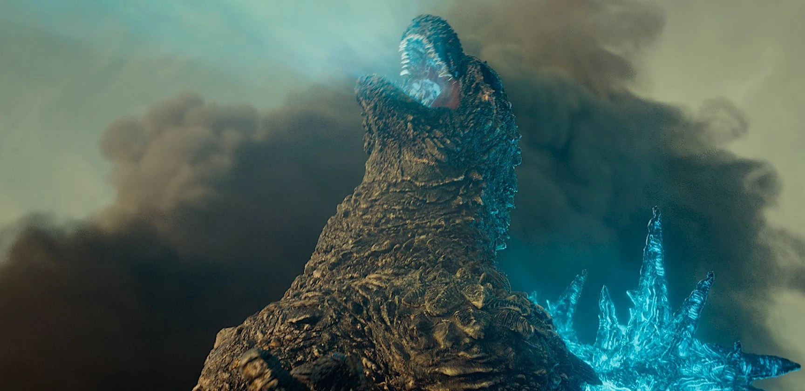

L’Écran de Minuit · Des films qui marquent, des avis qui parlent.
Godzilla Minus One
Un film de monstre qui parle du cœur humain.
Le film, en vrai
- RéalisateurTakashi Yamazaki
- AvecRyunosuke Kamiki, Minami Hamabe
- GenreKaijū, drame historique
- Sortie, Japon
- ÉpoqueJapon, 1945 à 1947
- Durée2 h 05, produit par Toho
- Oscar 2024Meilleurs effets visuels, une première pour un film japonais

Après la guerre, le Japon est à zéro. Puis Godzilla arrive, et le fait tomber à moins un.
Ginza, 1947. Il sort du cadre.
L’histoire, sans la fin
-
 1945
1945L’île d’Odo
Kōichi, pilote kamikaze qui a fui sa mission, se pose sur une île. Quelque chose sort de la nuit.
-
 1947
1947Tokyo en ruines
Rongé par la honte, il forme une famille de hasard avec Noriko et un bébé orphelin.
-

1947La menace
Devenu immense, Godzilla fonce sur Tokyo. Pas d’armée. Juste d’anciens soldats et un plan désespéré.
-
?
Des hommes brisés peuvent-ils se relever une dernière fois ?
La fin, tu la découvres toi-même.
Mon avis
« J’y allais pour le monstre. Je suis resté pour les humains. »
Godzilla fait vraiment peur : chaque apparition est lente, lourde, et le son te traverse. Mais ce qui m’a marqué, ce sont les personnages. Kōichi est mon préféré. C’est un héros minuscule face à un monstre géant, et son vrai combat est contre sa propre honte.
J’ai eu peur pendant les attaques, j’ai été triste devant le Japon détruit, et pendant la bataille en mer j’avais le cœur qui tapait. À la fin, c’est l’espoir qui reste.
Ma critique : le début est un peu lent, et certains personnages secondaires sont simples. Mais le message vaut le détour : on peut toujours se relever, et le vrai monstre, c’est aussi la guerre.
En bref. Touche une carte pour la retourner.
Le verdict
À voir au moins une fois. Mon conseil : en VO sous-titrée, de nuit, le son à fond.
Et toi, quel film de monstre t’a le plus marqué ?
Dis-le-moi en commentaire.